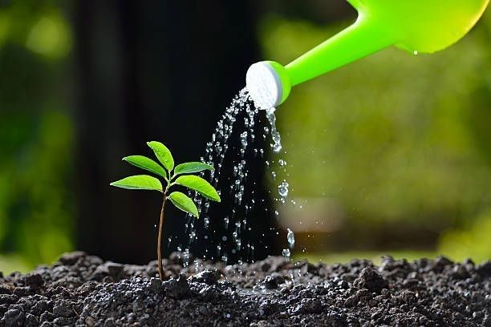
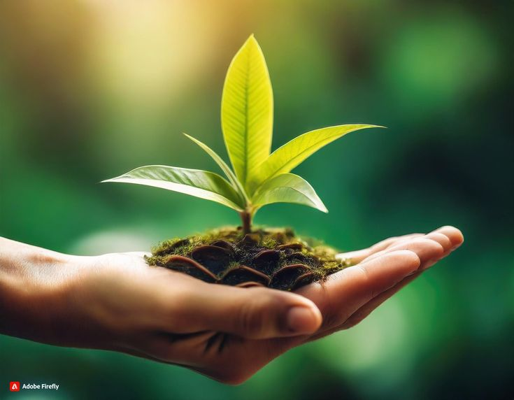

 Why Plants are Important
Plants are the backbone of all life on Earth. They produce oxygen, remove carbon dioxide, and form the basis of the food chain. Without plants, life as we know it would not exist.
Interesting Facts about Plants
- The tallest tree in the world is a coast redwood named Hyperion, standing at over 379 feet.
- Bananas are technically berries, while strawberries are not!
- Some plants, like the Venus flytrap, are carnivorous and eat small insects.
- Bamboo is the fastest-growing plant, capable of growing up to 35 inches in a single day.
 Benefits of Plants
Plants provide countless benefits to humans and the environment:
- They improve air quality by absorbing pollutants and releasing oxygen.
- They help prevent soil erosion and maintain the water cycle.
- They serve as food, medicine, and raw materials for countless products.
- Green spaces with plants can reduce stress and improve mental well-being.